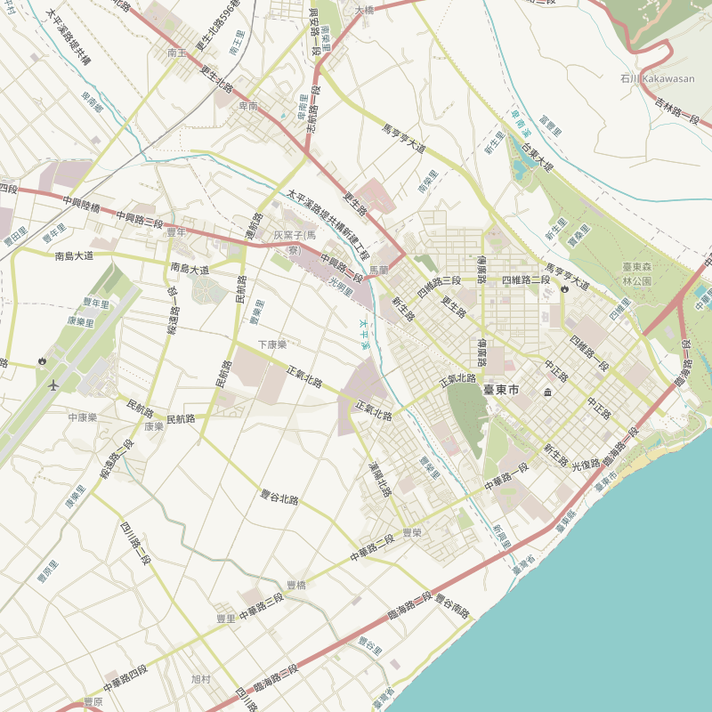

開放街圖・台灣
自由開放的圖資廣泛運用的圖資
人人可編輯的世界地圖
OpenStreetMap（開放街圖，簡稱 OSM）是自由而且開源的全球地圖，於 2004 年由英國的 Steve Coast 發起，採用類似 Wiki 的協作編輯以及開放的授權與格式。OSM 的地圖由像你一樣的使用者繪製。因為來自一般的使用者，所以內容相當多元。資料的來源可能根據手持 GPS 裝置、航照圖以及其他自由內容，甚至是單靠使用者由於對本地的認識而得。雖然不全是經過專業訓練的人士，但可以產生接近專業地理資訊水準的地圖。 地圖以開放資料庫授權（ODbL）方式授權，可以日常生活、導航、學術、甚至商業應用。
廣獲採用
OSM 圖資廣獲包括 Amazon、Apple、BBC、facebook、Garmin、Uber、精靈寶可夢GO、中華郵政、法國航空、劍橋大學、維基百科等具領導地位的組織採用，在不同領域當中都深受歡迎。
開放開源
OSM 是一個「屬於大家的地圖」，任何人都可以參與製圖，且自由與免費地使用地圖，開放的授權與格式更可以讓使用者自由地去延伸、應用 OSM 圖資。
在地智識
全球每日有超過100萬名的圖客對 OSM 地理圖資作出編輯貢獻，並貢獻超過40億的資料點 (node)，OSM 儼然成為大家生活中不可或缺的一環。
社群導向
正如同維基百科保有每次編輯的記錄備査，OSM 也有複査機制供貢獻者巡査編輯記錄，確保圖資能夠正確繪製，讓地圖使用者能獲得並使用詳實的地圖。

不同圖磚 各取所需
OpenStreetMap及其他應用服務有提供多種地圖樣式，即使是相同的資料也會給你帶來截然不同的感受！
探索更多地圖樣式(英語)© OpenStreetMap contributors.Humanitarian Map Tiles style by Humanitarian OpenStreetMap Team.Transport Map Tiles courtesy of Andy Allan.